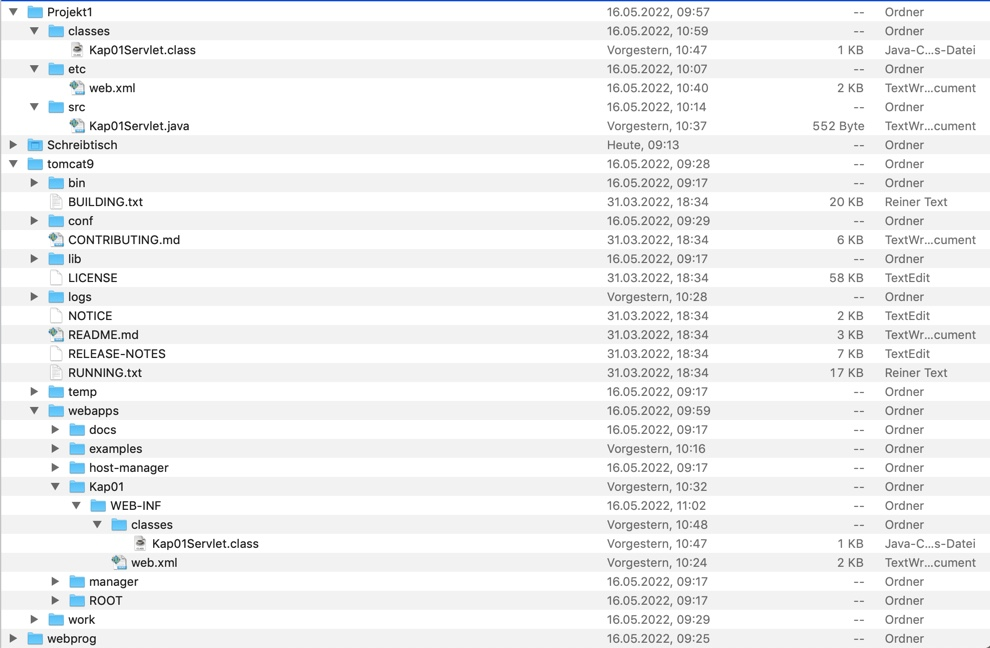

Vorlesung 5
Tomcat Server
Am Anfang haben wir ganz lange über einen Klausur Termin diskutiert...
Die Idee der fünften Vorlesung war einen Tomcat Server zu starten. Ein (Apache) Tomcat ist ein Open-Source-Webserver und Webcontainer, der die Spezifikation Jakarta Servlets (früher Java Servlets) und Jakarta Server Pages (JSP, früher JavaServer Pages) implementiert, wodurch in Java geschriebene Webanwendungen auf Servlet- oder JSP-Basis ausgeführt werden können .
Klingt ja nicht sehr kompliziert... Was könnte da nur schief gehen?
Get und Post
Neben der Übungsaufgabe haben wir uns auch mit ein wenig Theorie auseinandergesetzt. Die Kommunikation zwischen Server und Client haben wir uns schon in vorherigen Vorlesungen angeschaut. Der Client schickt eine HTTP Anfrage an den Server, der Server schickt eine HTTP Datei wieder zurück. Die am häufigsten verwendeten Methoden sind hier GET und POST. Diese gehen beide vom Client aus, haben aber leicht unterschiedliche Funktionen:

Das Problem hinter diesen HTTP Anfragen, vor allem bei der Post Anfrage ist, dass sehr viele Informationen über den Header entnommen werden können, so sind Abhör-Attacken sehr einfach. Außerdem können solche HTTP Anfragen sehr lang werden.
Tomcat Development & Hosting
Der Java-Code wird in einem Ordner Verzeichnis gespeichert.
Projekt a
- SRC
- Kap01.java
- Classes
- Kap01.class
- etc
- web.xml
Dann wird der Code ausgeführt und eine neue Klasse erstellt, die in einem Deployment Verzeichnis gespeichert wird:
tomcat5 - webapps - Kap01 - WEB-INF - classes

Durch das Kompilieren der Kap01.java-Datei wird eine Java-Class Kap01Servlcet.class erstellt, die in das WEB-INF-Classes Verzeichnis des Tomcat kopiert werden muss.
Nach dem Starten des TomCats aus dem TomCat Verzeichnis lässt sich der Inhalt der HTML Datei über "http://localhost:8080/Kap01/Serv1" aufrufen und der in das Java-File eingetrage HTML Code wird ausgegegeben.
Potenzielle Probleme
Hier eine Liste mit möglichen Problemen die aufgetreten sind:
- Oracle Datenbanken blockierten den eigenen 8080-Port
- Dateien richtig einzuordnen, am besten über das CLI erfordert ein sehr hohes Maß an Konzentration.
- Die richtige Syntax zu verwenden ist schwierig
- Wenn Server im Hintergrund weiterlaufen, benötigt der PC einige Ressourcen und der Lüfter hat eine Menge Arbeit.
CODE
Hier noch einmal der Code der Übungen
Kap01Servlet.javaDatei
<web-app xmlns="http://xmlns.jcp.org/xml/ns/javaee"
xmlns:xsi="http://www.w3.org/2001/XMLSchema-instance"
xsi:schemaLocation="http://xmlns.jcp.org/xml/ns/javaee
http://xmlns.jcp.org/xml/ns/javaee/web-app_4_0.xsd"
version="4.0">
<display-name>Kapitel 1 Servlet Test</display-name>
<description>
This is a simple web application with a source code organization
based on the recommendations of the Application Developer's Guide.
</description>
<servlet>
<servlet-name>Kapitel 1 Servlet</servlet-name>
<servlet-class>Kap01Servlet</servlet-class>
</servlet>
<servlet-mapping>
<servlet-name>Kapitel 1 Servlet</servlet-name>
<url-pattern>/Serv1</url-pattern>
</servlet-mapping>
</web-app>
web.xml Datei
import javax.servlet.*;
import javax.servlet.http.*;
import java.io.*;
public class Kap01Servlet extends HttpServlet {
public void doGet (HttpServletRequest request, HttpServletResponse response)
throws IOException {
PrintWriter out = response.getWriter();
java.util.Date today = new java.util.Date();
out.println("<html>" + "<body>" + "<h1 align=center>VKBF Kapitel1 Servlet </h1>" + "<br>" + today + "</body>" + "</html>");
}
}